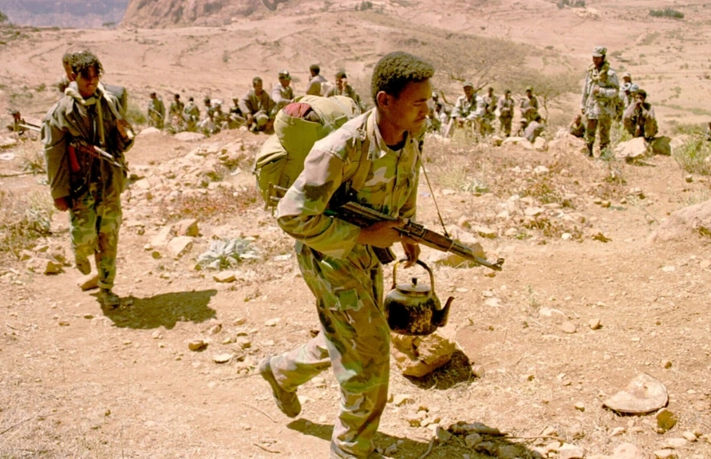

ከየፈርጁ

"ቀብር ከሩቁ እናይ ነበር" የኢትዮጵያና የኤርትራ ድንበር ነዋሪዎች ታሪክ

የጠቅላይ ሚኒስትር ዐቢይ የአራት ዓመት ጉዞ በወፍ በረር ሲቃኝ

የብሔር ግጭት የሚንጣት ሀገር ኢትዮጵያ

መንግሥት እና ህወሓት ስምምነት ላይ እንዳይደርሱ ሊያደርጉ የሚችሉ አራት ጉዳዮች

በጦርነቱ ምክንያት ከአለም ተቆራርጣ ባለችው መቀለ ኑሮ ምን ይመስላል?

29 ሚያዝያ 2022
ጦርነቱ በተካሄደባቸው ሁለት ዓመታት ጊዜ ውስጥ ብቻ በአስር ሺህዎች የሚቆጠሩ ሰዎች ከሁለቱም ወገን ለሞት እና ለመቁሰል ታደርገዋል። ምንም እንኳን በታህሳስ 2002 ዓ.ም የሁለቱ ሃገራት መሪዎች አልጀርስ ላይ የሰላም ስምምነት ላይ ቢደርሱም ሠራዊታቸው ድንበር ላይ ለጦርነት እንደተፋጠጠ ይገኛሉ። እስካሁን ፍፃሜ ያላገኘውን የሁለቱ ሃገራት ጦርነትን ከሃያ ዓመታት በፊት ምን ቀሰቀሰው? ይህንን ፍጥጫን ለማብቃት የሚያስችል ምንስ ተስፋ አለ?
ጦርነቱ ይህ ነው የሚባል የጎላ ጠቀሜታ በሌላት በትንሿ የድንበር ከተማ ባድመ ምክንያት ግንቦት 28 ቀን 1990 ዓ.ም ነበር የተቀሰቀሰው። የድንበር ከተማዋ የወርቅም ሆነ የነዳጅ ዘይት ሃብት ባይኖራትም ሁለቱም ሃገራት በራሳቸው ግዛት ስር እንድትሆን ከፍተኛ ፍላጎት ነበራቸው። በወቅቱም ጦርነቱ "ሁለት መላጦች ለማበጠሪያ የሚደርጉት ፍልሚያ" በሚል ይገለፅ ነበር። ጦርነቱ እየተስፋፋ ሲመጣ ቁጥሩ ከፍተኛ የሆነ ሕዝብን ለመፈናቀል ዳርጓል። "ይህ ጦርነት በሁለቱም ሃገራት ያሉ ቤተሰቦችን አፍርሷል" ሲል ለድንበሩ ቅርብ በሆነችው የአዲግራት ከተማ ነዋሪው ካሳሁን ወልደጊዮርጊስ ያስታውሳል። "ድንበር ተሻግረን በጋብቻ የተሳሰርን ነን፤ አንዳችን በአንዳችን ሠርግም ሆነ ቀብር ላይ ለመገኘት አንችልም" የሚለው ደግሞ ለሁለት በተከፈለችው የዛላምበሳ ከተማ ነዋሪ የሆነው አስገዶም ተወልደ ነው። "በኤርትራ በኩል ባለችው ሰርሃ መንደር ውስጥ የሚኖር ቤተሰብ ነበረ፤ ሴት ልጃቸው ኢትዮጵያዊ አግብታ ኢትዮጵያ ውስጥ ትኖር ነበር። ጦርነቱ ካበቃ በኋላ ስትሞት ቤተሰቦቿ ቀብሯ ላይ መገኘት ስላልቻሉ፤ ከድንበር ባሻገር ኮረብታ ላይ ሆነው የቀብር ሥነ-ሥርዓቷን ለመመልከት ተገደዋል።" ጦርነቱ ተፅእኖውን ያሳረፈው በቤተሰብ ግንኙነት ላይ ብቻ ሳይሆን፤ በድንበር አቅራቢያ በንግድ የሚተዳደሩ ሰዎች ላይም ጭምር ነው። "ከጦርነቱ በፊት ሞቅ ብሎ የነበረው የንግድ እንቅስቃሴ አሁን የለም" ይላል በኤርትራ በኩል ባለች መንደር ውስጥ ነዋሪ የሆነው ክፍሎም ገብረመድህን።
ጦርነቱ ያበቃው በሰኔ ወር 1992 ዓ.ም ይሁን እንጂ የኢትዮጵያና የኤርትራ ድንበር ኮሚሽንን የመሰረተው የሰላም ስምምነት እሰኪፈረም ድረስ ሌላ ስድስት ወራት አስፈልጎ ነበር። በስምምነቱ በባድመ ምክንያት የተከሰተውን ግጭት ለአንዴና ለመጨረሻ ጊዜ ለመቋጨት ነበር የታሰበው። ነገር ግን ከ18 ወራት በኋላ በኮሚሽኑ የተሰጠው "የመጨረሻና አሳሪ" ውሳኔ አወዛጋቢዋን ባድመ ለኤርትራ በመስጠቱ በኢትዮጵያ በኩል ተጨማሪ ድርድር ማድረግን በቅድመ ሁኔታነት በመቅረቡ ተቀባይነት ሳያገኝ ቀረ። ኤርትራም በበኩሏ ውሳኔው ተግባራዊ ከመሆኑ ፊት ከቀድሞ ወዳጇ ጋር ውይይት ለማድረግ ሳትፈቅድ ቀረች። ሁለቱም ሃገራት ከያዙት አቋም ፈቀቅ ለማለት ባለመፍቀዳቸው ሰላም የማስፈኑ ተስፋ የማይጨበጥ ሆኖ እስካሁን ዘልቋል። በቀጥታም ሆነ ሃገራቱ በሚደግፏቸው አማፂ ቡድኖች አማካይነት የድንበር ላይ ግጭቶች ቀጥለዋል። በዚህ ሁሉ ውስጥ አወዛጋቢዋ ባድመ በኢትዮጵያ ቁጥጥር ስር ትገኛለች። በተጨማሪም ይህ ሁኔታ በሁለቱ ሃገራት እንዲሁም በቀሪው ዓለም ላይ ትልቅ ተፅእኖን አስከትሏል።
"በኢትዮጵያ በወረራ ተይዘው ባሉ ግዛቶች" ምክንያት ቀጣይነት ያለው ግዙፍ ሠራዊት እንደሚያስፈልጋት ኤርትራ ትገልፃለች። በዚህም ሠራዊቷን በዘላቂነት ለማጠናከር የግዴታ የብሔራዊ ውትድርና አገልግሎትን ታካሂዳለች። ቢሆንም ግን ይህን ከመነሻው ለ18 ወራት የታሰበው የግዴታ የውትድርና አገልግሎት በግልፅ ላልታወቀ ጊዜ ሊቆይ ይችላል። በዚህ የውትድርና አገልግሎት ላይ ላለመሳተፍ ለሚፈልጉ በርካታ ወጣቶች ብቸኛው አማራጭ ሃገራቸውን ጥለው መሰደድ ብቻ ነው። በዚህ መልኩ ከኤርትራ የሸሱ ወጣቶች በአሁኑ ወቅት ኢትዮጵያና ሱዳን ውስጥ የሚገኙ ትላልቅ የስደተኞች መጠለያዎችን አጨናንቀዋል። ወይም ደግሞ ህይወታቸውን ለአደጋ አጋልጠው የሰሃራ በረሃንና የሜዲትራኒያን ባሕርን በማቋረጥ አውሮፓ ለመግባት ጥረት ያደርጋሉ። ምንም እንኳን በርካቶች አደገኛው ባሕር ውስጥ ሰምጠው ቢሞቱም ወይም የጉዞ መስመሩን የሚቆጣጠሩት ታጣቂዎችና የሕገ-ወጥ አዘዋዋሪዎች ግፍ ሰለባ ቢሆኑም፤ ኤርትራዊያን ወደ አውሮፓ ለመሻገር ከሚሞክሩት ሁሉ ከፍተኛውን ቁጥር ይይዛሉ። ኤርትራ ከኢትዮጵያ ጋር የገባችበትን ፍጥጫ ሕገ-መንግሥት ሥራ ላይ እንዳይውል ለማድረግ፣ ነፃ ጋዜጦችን ለማገድ እንዲሁም ተቃዋሚዎችን ለመጨቆን እንደምክንያት ተጠቅማበታለች። በ1993 ዓ.ም የኤርትራ መንግሥት በወሰደው እርምጃ ብቅ ብቅ እያሉ የነበሩ የግል ጋዜጦች በርካታ አርታኢያንና ዘጋቢዎች ለእስር ተዳርገዋል። በተመሳሳይ ጊዜም ፕሬዝዳንት ኢሳያስ አፈወርቂ ጦርነቱን የመሩበት መንገድና ተጠያቂ ለመሆን አለመፍቀዳቸውን የተቹ የገዢው ፓርቲ የሕዝባዊ ግንባር ለዴሞክራሲና ፍትህ (ሕግዴፍ) ታዋቂ መሪዎች ታስረዋል። እስካሁንም ድረስ ታሳሪዎቹ ያሉበት ቦታ አይታወቅም። በኤርትራ ያሉ የፖለቲካ እስረኞች ፈፅሞ ፍርድ ቤት ቀርበው የማያውቁ ሲሆን ማንም እንዲጠይቃቸውም አይፈቀድም። የመንግሥት ባለስልጣናት ታሳሪዎቹን የሃገሪቱን "ብሔራዊ ደህንነት" አደጋ ላይ በመጣል ይከሷቸዋል። በተባበሩት መንግሥታት የሰብአዊ መብቶች ኮሚሽን ኤርትራን በሰብአዊነት ላይ ሳይፈፀሙ አልቀሩም የሚላቸውን ወንጀሎችን ጨምሮ በከባድ የሰብአዊ መብት ጥሰቶች ይከሳታል። ኢትዮጵያም በሰብአዊ መብት ጥሰቶች የምትከሰሰው ቢሆንም በአሁኑ ጊዜ ከድንበር ከተማዋ ባድመ ይልቅ የሚያሳስባት በሃገር ውስጥ ያለው ፖለቲካዊ አለመረጋጋት ነው። በተለያዩ የኢትዮጵያ ክፍሎች ውስጥ የተቀሰቀሱ የተቃውሞ እንቅስቃሴዎችን ለመቆጣጠርም በቅርቡ የአስቸኳይ ጊዜ አውጃለች።
በባድመ ምክንያት ለዓመታት የዘለቀው ፍጥጫ መቋጫ ያገኝ ይሆን? አዲሱ ጠቅላይ ሚኒስትር አብይ አህመድ ፍጥጫው ሠላማዊ መፍትሄ እንዲያገኝ ጥሪ ቢያቀርቡም ከኤርትራ በኩል የተሰጠው ምላሽ ጥሪዉ ቀደም ያሉት የኢትዮጵያ መሪዎች ካቀረቡት የተለየ አለመሆኑን በመጥቀስ ውድቅ አድርገውታል። "በእርግጥም ሠላም ለሁለቱም ሕዝቦች ጠቃሚ ነው፤ ነገር ግን ይህ መሰረት ማድረግ ያለበት ኢትዮጵያ እስካሁን ሳታከብረው የቆየችውን ዓለም አቀፍ ሕግ በማክበር ነው" ሲሉ የኤርትራው የማስታወቂያ ሚኒስትር የማነ ገብረመስቀል ተናግረዋል። ቢሆንም ግን ከበርካታ ዓመታት በኋላ ለመጀመሪያ ጊዜ በቅርቡ ወደ ኤርትራ የተጓዙት የአሜሪካ የውጪ ጉዳይ መስሪያ ቤት ከፍተኛ ባለስልጣን የዶናልድ ያማሞቶ ጉብኝት አዲስ ተስፋን ፈጥሯል። ባለስልጣኑ በተመሳሳይ ወደ ኢትዮጵያም ተጉዘው ነበር። "በሁለቱም ወገን ያለው ሕዝብ ሠላምን ይፈልጋል፤ በአሁኑ ወቅት መሪዎች ስለሠላም ሲናገሩ መስማት መልካም ነው" ይላል ኤርትራዊው ክፍሎም ገብረመድህን። "ሕዝቡ በመንግሥታቱ ላይ ግፊት በማድረግ ሠላም እንዲመጣና የነበረው ግንኙነት እንዲቀጥል እንደሚያደርግ እርግጠኛ ነኝ" ድንበር ተሻግሮ ኢትዮጵያ ውስጥ ያለው ካሳሁን ወልደጊዮርጊስም ይህንኑ ተስፋ ያደርጋል። "ይህ ወደ አስመራ የሚወስደው መንገድ እሰከመጨረሻው ተዘግቶ እንደማይቀር እናምናለን" ይላል።